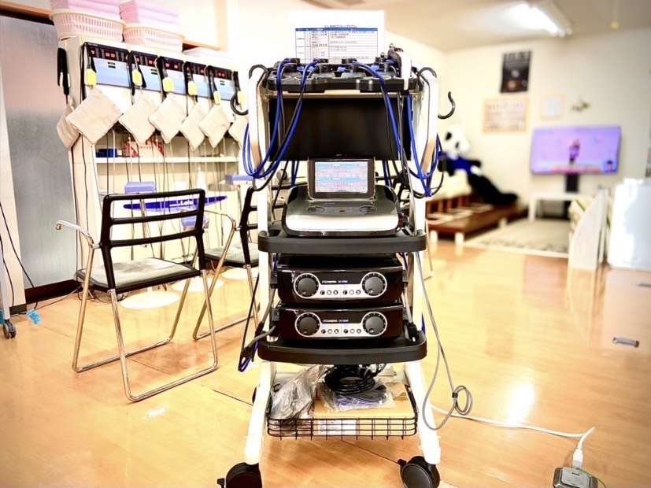
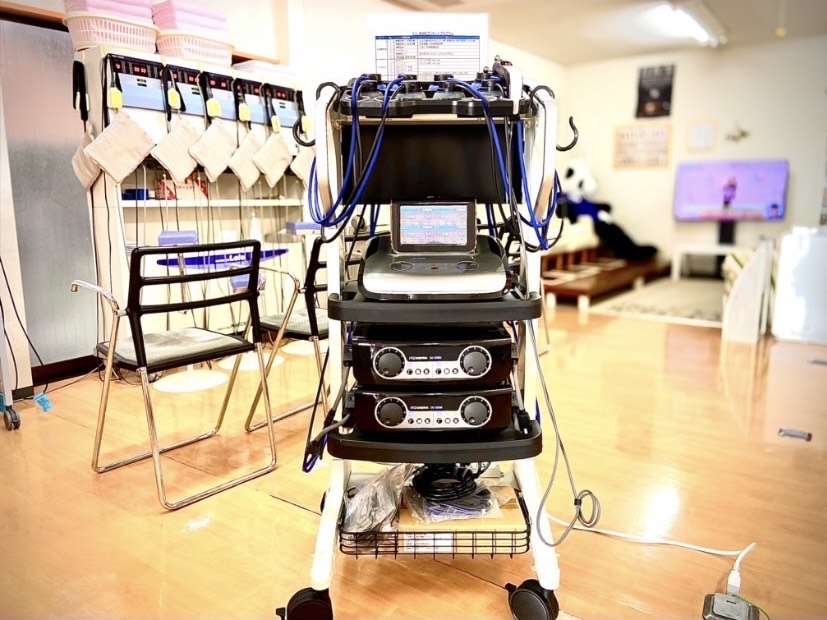

骨折の治療期間の短縮
今までの骨折治療では、整後、固定後に骨が自然修復されるのを待ちましたが、近年は超音波を骨折箇所に照射することで、細胞が活性化され、自然治癒能力が高まり、骨折の治療を促進
させられることが分かっています。
照射される非常に低出力(30mw)の超音波です。骨癒合を促進する超音波は、通常の超音波が連続的なのに対し、パルス状にして断続的になっていることが特徴です。
パルス状の超音波でなければ、骨癒合促進効果がないことが明らかになっています。また非常に低出力なので、患者自身は何も感じず、全く痛みもない のです。この超音波を1日に20分骨折部に充てることで、自然治癒を待つよりも骨折の治療期間を、約4割短縮する効果が証明されています。 また体表に近い骨ばかりではなく、患部の骨にもしっかり届くことが確認されています。
照射される非常に低出力(30mw)の超音波です。骨癒合を促進する超音波は、通常の超音波が連続的なのに対し、パルス状にして断続的になっていることが特徴です。
パルス状の超音波でなければ、骨癒合促進効果がないことが明らかになっています。また非常に低出力なので、患者自身は何も感じず、全く痛みもない のです。この超音波を1日に20分骨折部に充てることで、自然治癒を待つよりも骨折の治療期間を、約4割短縮する効果が証明されています。 また体表に近い骨ばかりではなく、患部の骨にもしっかり届くことが確認されています。
 
